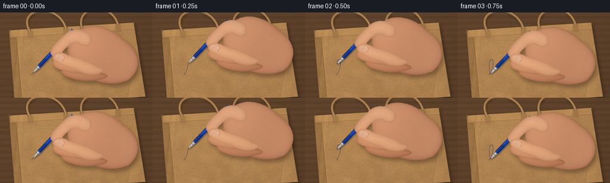
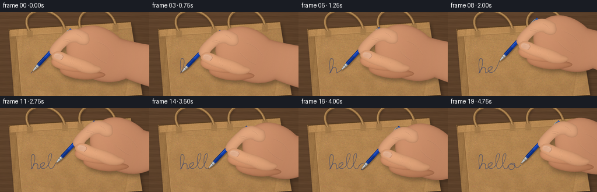
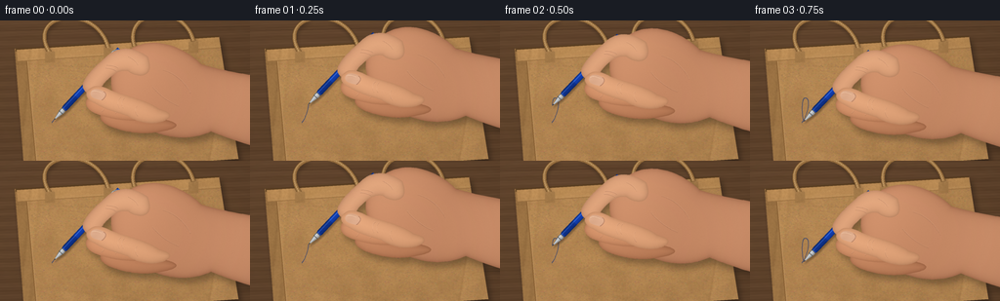
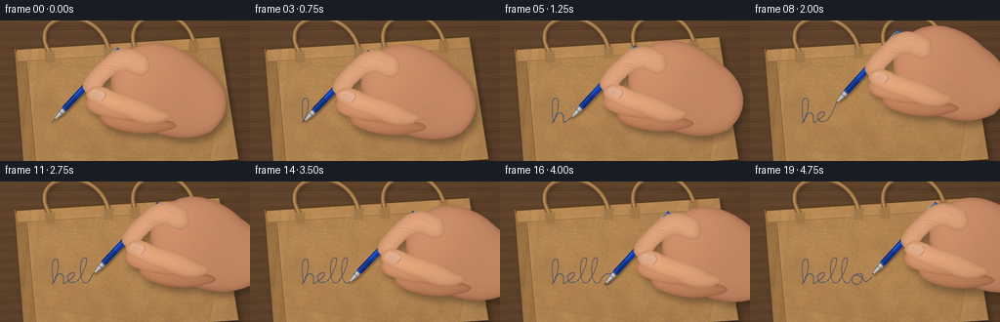

CODING AGENTS AS PIXEL WORLD MODELS
traex/GPT-6.1-Sol · mechanics_0045
点击播放 · 原生 RGB 像素
逐轮保存的候选
回放视频、检查图与代码变化。
每份候选均可单独播放。实际图片检查记录在下方工具轨迹中。
候选 01播放与检查图
点击播放 · 原生 RGB 像素


展开代码变化
--- 上一保存版本
+++ 本次保存版本
@@ -0,0 +1,239 @@
+from pathlib import Path
+import json, math
+import numpy as np
+from PIL import Image, ImageDraw, ImageFilter
+from scipy.ndimage import gaussian_filter, distance_transform_edt
+import artifact_io
+
+ROOT = Path(__file__).resolve().parent
+SPEC = json.loads((ROOT/'task_spec.json').read_text())
+S=4
+W,H=SPEC['width'],SPEC['height']
+WW,HH=W*S,H*S
+rng=np.random.default_rng(246)
+yy,xx=np.mgrid[:HH,:WW].astype(np.float32)/S
+
+def poly_mask(points):
+ im=Image.new('L',(WW,HH)); ImageDraw.Draw(im).polygon([(int(x*S),int(y*S)) for x,y in points],fill=255)
+ return im
+
+def cubic(a,b,c,d,n=35):
+ t=np.linspace(0,1,n)[:,None]
+ return (1-t)**3*np.array(a)+3*(1-t)**2*t*np.array(b)+3*(1-t)*t*t*np.array(c)+t**3*np.array(d)
+
+def outline(parts):
+ pts=[]
+ for a,b,c,d in parts: pts.extend(cubic(a,b,c,d))
+ return pts
+
+def line(im,pts,fill,width):
+ ImageDraw.Draw(im).line([(float(p[0])*S,float(p[1])*S) for p in pts], fill=fill, width=max(1,round(width*S)),joint='curve')
+
+def cast_shadow(im,mask,dx=3,dy=5,blur=3,opacity=0.24):
+ sh=Image.new('L',(WW,HH)); sh.paste(mask,(round(dx*S),round(dy*S)))
+ sh=sh.filter(ImageFilter.GaussianBlur(blur*S))
+ sh=sh.point(lambda p:int(p*opacity))
+ im.paste((40,28,19),(0,0),sh)
+
+# Rich matte kraft sheet, large-scale folds, random pulp and very fine fibers.
+nfine=rng.normal(0,1,(HH,WW)).astype(np.float32)
+nmid=gaussian_filter(nfine,2.8)*7
+nlarge=gaussian_filter(rng.normal(0,1,(HH,WW)),22)*60
+paperlum=4.1*nfine+2.0*nmid+3.2*nlarge + 6*(1-xx/W)-2*yy/H
+# subtle oblique wrinkles and the folded side gusset
+for x0,y0,ang,amp,wide in [(26,88,-.09,-11,1.3),(34,77,-.09,6,1.1),(225,76,-.16,-8,.85),(56,132,.13,-4,1.5),(100,48,.045,-2.8,.65)]:
+ dist=xx-x0-ang*(yy-y0)
+ if x0>40 and x0<180: dist=yy-y0-ang*(xx-x0)
+ paperlum+=amp*np.exp(-dist**2/(2*wide**2))
+ paperlum-=amp*.65*np.exp(-(dist-2.0)**2/(2*(wide*1.5)**2))
+# minute organic pulp speckles, without a repeating texture
+paper=np.stack([177+paperlum,132+paperlum*.87,80+paperlum*.63],-1)
+paper=np.uint8(np.clip(paper,0,255))
+paperim=Image.fromarray(paper)
+fiberd=ImageDraw.Draw(paperim)
+for _ in range(12000):
+ x=float(rng.uniform(0,W)); y=float(rng.uniform(0,H)); length=float(rng.uniform(.15,1.6))
+ col=(int(rng.uniform(143,188)),int(rng.uniform(103,145)),int(rng.uniform(64,100)))
+ fiberd.line((x*S,y*S,(x+length)*S,(y+float(rng.normal(0,.16)))*S),fill=col,width=1)
+
+# Warm, subdued oak tabletop.
+woodnoise=gaussian_filter(rng.normal(size=(HH,WW)),(.5,10))*8
+wood=3*np.sin(yy*.6+.6*np.sin(xx*.023))+2*np.sin(yy*2.1+xx*.07)+woodnoise
+wood+=5*(1-xx/W)-4*yy/H
+bg=Image.fromarray(np.uint8(np.clip(np.stack([94+wood,66+wood*.83,43+wood*.7],-1),0,255)))
+bgd=ImageDraw.Draw(bg)
+for yc in [10,57,117]:
+ line(bg,[(0,yc),(W,yc-4)],(68,45,28),.5)
+# A flattened grocery bag with a visible folded opening and twisted paper handles.
+bagpoly=[(15,29),(224,16),(244,142),(25,157)]
+bagmask=poly_mask(bagpoly)
+cast_shadow(bg,bagmask,3,4,3,.55)
+bg.paste(paperim,(0,0),bagmask)
+# gusset fold triangular paper regions, top rolled lip
+left=poly_mask([(15,29),(27,39),(37,149),(25,157)])
+leftarr=np.uint8(np.clip(paper.astype(float)*np.array([.87,.86,.84]),0,255))
+bg.paste(Image.fromarray(leftarr),(0,0),left)
+line(bg,[(27,39),(37,149)],(137,96,52),.65)
+line(bg,[(28,40),(38,149)],(193,150,98),.5)
+# dark slit just inside upper edge, with doubled front rim.
+line(bg,[(16,30),(224,17)],(91,63,34),3.5)
+rim=poly_mask([(17,30),(224,17),(225,28),(18,42)])
+bg.paste(Image.fromarray(np.uint8(np.clip(paper.astype(float)*1.04,0,255))),(0,0),rim)
+line(bg,[(18,42),(225,28)],(148,108,63),.75)
+line(bg,[(20,40),(226,26)],(193,153,102),.4)
+# handle loops, textured cord cylindrical lighting.
+def handle(p0,p1,p2,p3):
+ pts=cubic(p0,p1,p2,p3,180)
+ sh=Image.new('L',(WW,HH)); line(sh,pts,255,4.2);cast_shadow(bg,sh,1,2.8,1.8,.4)
+ line(bg,pts,(104,73,39),4.6)
+ line(bg,pts,(164,121,71),3.6)
+ line(bg,pts+np.array([-.45,-.55]),(196,157,104),1.2)
+ for i in range(2,len(pts)-2,3):
+ p=pts[i]; tangent=pts[i+1]-pts[i-1]; tangent/=np.linalg.norm(tangent)
+ n=np.array([-tangent[1],tangent[0]])
+ line(bg,[p-n*1.6-tangent*.6,p+n*1.5+tangent*.6],(127,89,46),.27)
+handle((51,33),(25,-8),(99,-20),(111,29))
+handle((138,27),(125,-10),(186,-22),(198,21))
+# handle tabs on folded front panel
+for x,y in [(51,34),(111,30),(138,29),(198,24)]:
+ tab=poly_mask([(x-5,y-2),(x+5,y-2.5),(x+5,y+9),(x-5,y+9.7)])
+ bg.paste(Image.fromarray(np.uint8(np.clip(paper.astype(float)*.93,0,255))),(0,0),tab)
+ line(bg,[(x-4,y+8),(x+4,y+7.6)],(153,111,62),.35)
+
+# Handwritten, continuous lower-case 'hello', defined as an actual ballpoint trajectory.
+segments=[
+ ((53,105),(57,101),(63,83),(58,80)),
+ ((58,80),(52,76),(53,97),(55,104)),
+ ((55,104),(57,97),(61,92),(64,96)),
+ ((64,96),(67,99),(62,108),(68,103)),
+ ((68,103),(77,98),(79,92),(73,94)),
+ ((73,94),(66,96),(69,108),(79,102)),
+ ((79,102),(85,96),(92,78),(87,78)),
+ ((87,78),(80,78),(81,110),(90,103)),
+ ((90,103),(97,95),(103,77),(98,78)),
+ ((98,78),(91,81),(93,110),(102,103)),
+ ((102,103),(106,93),(116,92),(115,98)),
+ ((115,98),(115,108),(102,108),(105,98)),
+ ((105,98),(110,93),(116,99),(117,102)),
+ ((117,102),(120,104),(122,100),(125,98))]
+traj=np.concatenate([cubic(*seg,55) for seg in segments])
+lengths=np.r_[0,np.cumsum(np.linalg.norm(np.diff(traj,axis=0),axis=1))]
+# fine fixed skin structure, follows the hand instead of flickering
+skinnoise=gaussian_filter(rng.normal(0,1,(HH,WW)),.65)
+
+def skin_part(im,parts,origin,base=(193,137,101),glow=22,creases=None):
+ pts=np.array(outline(parts))+origin
+ mask=poly_mask(pts)
+ m=np.asarray(mask)>0
+ dist=distance_transform_edt(m)/S
+ # rounded anatomical volume with warm shadow at right and lower edges
+ qx=xx-origin[0];qy=yy-origin[1]
+ lum=-21*np.exp(-dist/1.9)+glow*(1-np.exp(-dist/6))
+ lum+=5*np.sin((qx+qy*.43)/25)-.11*qy-.025*qx
+ tex=np.roll(np.roll(skinnoise,int(origin[1]*S),axis=0),int(origin[0]*S),axis=1)
+ lum+=tex*1.7
+ arr=np.stack([base[0]+lum,base[1]+lum*.84,base[2]+lum*.69],-1)
+ im.paste(Image.fromarray(np.uint8(np.clip(arr,0,255))),(0,0),mask)
+ if creases:
+ over=Image.new('RGBA',(WW,HH));d=ImageDraw.Draw(over)
+ for a,b,c,dpt in creases:
+ ps=cubic(a,b,c,dpt,30)+origin
+ line(over,ps,(106,65,49,64),.45)
+ line(over,ps+np.array([0,-.55]),(252,204,166,47),.45)
+ im.alpha_composite(over)
+ return mask
+
+# Anatomy is expressed in coordinates relative to the nib. The shaft emerges from the pinch.
+palm=[((74,-69),(96,-88),(130,-78),(151,-57)),((151,-57),(179,-39),(186,-9),(161,12)),((161,12),(126,28),(91,10),(75,-5)),((75,-5),(54,-25),(53,-54),(74,-69))]
+middle=[((78,-18),(62,-21),(47,-31),(36,-23)),((36,-23),(29,-17),(35,-9),(44,-6)),((44,-6),(65,2),(86,2),(105,-2)),((105,-2),(119,-9),(99,-16),(78,-18))]
+ring=[((98,-2),(78,-4),(61,-13),(51,-8)),((51,-8),(43,-3),(50,5),(64,9)),((64,9),(88,17),(107,13),(119,10)),((119,10),(135,5),(119,-1),(98,-2))]
+index=[((96,-65),(79,-77),(64,-74),(55,-66)),((55,-66),(49,-60),(37,-51),(31,-40)),((31,-40),(28,-35),(30,-28),(37,-27)),((37,-27),(44,-26),(48,-32),(51,-37)),((51,-37),(60,-47),(68,-52),(76,-50)),((76,-50),(86,-42),(105,-43),(96,-65))]
+thumb=[((108,-11),(92,-22),(74,-24),(59,-30)),((59,-30),(52,-34),(42,-37),(37,-32)),((37,-32),(30,-28),(34,-20),(42,-17)),((42,-17),(53,-10),(64,-8),(75,-4)),((75,-4),(93,7),(112,4),(118,-2)),((118,-2),(121,-7),(115,-9),(108,-11))]
+
+def draw_pen(im,tip,angle):
+ u=np.array([math.cos(angle),math.sin(angle)])
+ v=np.array([-u[1],u[0]])
+ dx=xx-tip[0];dy=yy-tip[1]
+ a=dx*u[0]+dy*u[1]; b=dx*v[0]+dy*v[1]
+ radius=np.where(a<11,.17+.22*a, np.where(a<16,2.7,3.15))
+ mask=(a>=0)&(a<=99)&(np.abs(b)<radius)
+ maskim=Image.fromarray(np.uint8(mask)*255)
+ cast_shadow(im,maskim,1.1,2.3,.8,.38)
+ norm=np.clip(b/(radius+.001),-1,1)
+ light=np.sqrt(np.maximum(0,1-norm**2))
+ highlight=np.exp(-((norm+.38)/.16)**2)
+ arr=np.zeros((HH,WW,3),dtype=np.float32)
+ # cobalt blue barrel, with narrow glossy reflected highlight
+ arr[:,:,0]=10+9*light+34*highlight
+ arr[:,:,1]=38+24*light+48*highlight
+ arr[:,:,2]=105+67*light+60*highlight
+ # stainless steel cone and collar
+ metal=(a<15)
+ metalshade=73+115*light+53*highlight+14*np.sin(norm*9)
+ for j,off in enumerate([0,4,7]): arr[:,:,j]=np.where(metal,metalshade+off,arr[:,:,j])
+ # tip is short dark ballpoint, touching the paper
+ for j,c in enumerate([35,41,48]):arr[:,:,j]=np.where(a<2,c+light*15,arr[:,:,j])
+ for band in [10.5,14.6,86,95]:
+ sel=np.abs(a-band)<.45
+ arr[sel]*=.58
+ arr[(a>16)&(a<33)]*=.84
+ # fine grip ridges around the front of the blue barrel
+ ribs=(a>17)&(a<31)&((a*1.65)%1<.2)
+ arr[ribs]*=.71
+ im.paste(Image.fromarray(np.uint8(np.clip(arr,0,255))),(0,0),maskim)
+ # silver pocket clip, on the exposed back end
+ pts=[tip+u*97-v*1.4,tip+u*93-v*3.4,tip+u*72-v*3.4,tip+u*70-v*2.5]
+ line(im,pts,(79,100,121),1.65)
+ line(im,[p-v*.4 for p in pts],(198,208,215),.55)
+
+frames=[]
+for f in range(SPEC['frames']):
+ im=bg.copy().convert('RGBA')
+ # Continuous reveal with the ink exactly beneath the moving metal point.
+ progress=.012 + .988*min(f/18,1)
+ upto=np.searchsorted(lengths,progress*lengths[-1])
+ upto=max(2,min(upto,len(traj)-1))
+ tip=traj[upto].copy()
+ ink=Image.new('RGBA',(WW,HH))
+ line(ink,traj[:upto+1],(25,54,126,220),.82)
+ line(ink,traj[:upto+1],(21,49,115,165),.42)
+ # tiny gaps and mottling caused by the rough paper fibers in ballpoint ink
+ inkarr=np.array(ink)
+ tex=(paperlum+9)/21
+ inkarr[:,:,3]=(inkarr[:,:,3].astype(float)*np.clip(.85+tex*.13,.58,1)).astype(np.uint8)
+ im.alpha_composite(Image.fromarray(inkarr))
+ lift=max(0,(f-18))*2.4
+ tip[1]-=lift
+ angle=-.82+.014*math.sin(f*.63)
+ # Combined soft contact shadow under the hand.
+ allmask=Image.new('L',(WW,HH))
+ for shape in [palm,ring,middle,index,thumb]:
+ allmask=Image.fromarray(np.maximum(np.asarray(allmask),np.asarray(poly_mask(np.array(outline(shape))+tip))))
+ cast_shadow(im,allmask,3.2+lift*.4,5.0+lift*.7,3.3+lift*.3,.38)
+ skin_part(im,palm,tip,base=(185,126,92),glow=19,creases=[((101,-34),(108,-25),(119,-17),(128,-14)),((112,-51),(126,-47),(136,-36),(140,-27))])
+ skin_part(im,ring,tip,base=(184,123,87),glow=15)
+ skin_part(im,middle,tip,base=(195,133,95),glow=19,creases=[((52,-17),(53,-13),(51,-9),(49,-8)),((66,-13),(65,-9),(64,-7),(63,-6))])
+ draw_pen(im,tip,angle)
+ skin_part(im,index,tip,base=(202,146,109),glow=20,creases=[((53,-53),(57,-53),(61,-52),(64,-50)),((54,-56),(59,-56),(63,-55),(66,-53)),((76,-65),(82,-62),(85,-59),(86,-56))])
+ skin_part(im,thumb,tip,base=(211,152,112),glow=18,creases=[((69,-23),(65,-21),(65,-16),(67,-12)),((72,-22),(69,-19),(69,-15),(71,-12)),((85,-14),(82,-11),(84,-6),(86,-4))])
+ # Small curved thumbnail, restrained highlights, cuticle line.
+ nailpts=np.array(outline([
+ ((39,-30),(42,-33),(49,-31),(53,-28)),
+ ((53,-28),(55,-26),(52,-20),(49,-20)),
+ ((49,-20),(45,-21),(39,-22),(38,-25)),
+ ((38,-25),(37,-27),(38,-29),(39,-30))]))+tip
+ nm=poly_mask(nailpts)
+ qx=xx-tip[0];qy=yy-tip[1]
+ nl=3*np.sin((qx+qy)*.3)+4*np.exp(-((qy+27)/2.2)**2)
+ nail=np.stack([221+nl,171+nl,139+nl],-1)
+ im.paste(Image.fromarray(np.uint8(np.clip(nail,0,255))),(0,0),nm)
+ line(im,cubic((51,-29),(56,-26),(51,-21),(49,-20),30)+tip,(169,111,82),.38)
+ line(im,cubic((39,-29),(42,-31),(46,-29),(49,-28),20)+tip,(243,203,170),.4)
+ # subtle frame-wide optical softness and vignette
+ out=np.asarray(im.convert('RGB').filter(ImageFilter.GaussianBlur(.17*S))).astype(float)
+ vign=1-.055*((xx-W*.47)**2/(W*.7)**2+(yy-H*.52)**2/(H*.8)**2)
+ out=np.uint8(np.clip(out*vign[:,:,None],0,255))
+ small=Image.fromarray(out).resize((W,H),Image.Resampling.LANCZOS)
+ frames.append(np.asarray(small,dtype=np.uint8))
+artifact_io.save(np.stack(frames),ROOT)
+print('Saved',len(frames),'RGB frames at',W,H)
候选 02播放与检查图
点击播放 · 原生 RGB 像素


展开代码变化
--- 上一保存版本
+++ 本次保存版本
@@ -144,7 +144,7 @@
return mask
# Anatomy is expressed in coordinates relative to the nib. The shaft emerges from the pinch.
-palm=[((74,-69),(96,-88),(130,-78),(151,-57)),((151,-57),(179,-39),(186,-9),(161,12)),((161,12),(126,28),(91,10),(75,-5)),((75,-5),(54,-25),(53,-54),(74,-69))]
+palm=[((74,-69),(96,-88),(130,-78),(151,-57)),((151,-57),(178,-49),(210,-44),(235,-42)),((235,-42),(245,-20),(248,17),(237,35)),((237,35),(209,30),(178,19),(161,12)),((161,12),(126,28),(91,10),(75,-5)),((75,-5),(54,-25),(53,-54),(74,-69))]
middle=[((78,-18),(62,-21),(47,-31),(36,-23)),((36,-23),(29,-17),(35,-9),(44,-6)),((44,-6),(65,2),(86,2),(105,-2)),((105,-2),(119,-9),(99,-16),(78,-18))]
ring=[((98,-2),(78,-4),(61,-13),(51,-8)),((51,-8),(43,-3),(50,5),(64,9)),((64,9),(88,17),(107,13),(119,10)),((119,10),(135,5),(119,-1),(98,-2))]
index=[((96,-65),(79,-77),(64,-74),(55,-66)),((55,-66),(49,-60),(37,-51),(31,-40)),((31,-40),(28,-35),(30,-28),(37,-27)),((37,-27),(44,-26),(48,-32),(51,-37)),((51,-37),(60,-47),(68,-52),(76,-50)),((76,-50),(86,-42),(105,-43),(96,-65))]
可观测工具轨迹
实际执行的命令与返回图片。
命令 1exit 0
/bin/bash -lc 'ls -la && cat prompt.txt && cat GENERATION_RULES.md && cat task_spec.json'
命令 2exit 0
/bin/bash -lc "cat artifact_io.py && python - <<'PY' import PIL, numpy print(PIL.__version__) PY"
命令 3exit 0
/bin/bash -lc 'fc-list | head -10'
命令 4exit 0
/bin/bash -lc "python - <<'PY' import scipy print(scipy.__version__) PY"
命令 5exit 0
/bin/bash -lc "cat > generate.py <<'PY'
from pathlib import Path
import json, math
import numpy as np
from PIL import Image, ImageDraw, ImageFilter
from scipy.ndimage import gaussian_filter, distance_transform_edt
import artifact_io
ROOT = Path(__file__).resolve().parent
SPEC = json.loads((ROOT/'task_spec.json').read_text())
S=4
W,H=SPEC['width'],SPEC['height']
WW,HH=W*S,H*S
rng=np.random.default_rng(246)
yy,xx=np.mgrid[:HH,:WW].astype(np.float32)/S
def poly_mask(points):
im=Image.new('L',(WW,HH)); ImageDraw.Draw(im).polygon([(int(x*S),int(y*S)) for x,y in points],fill=255)
return im
def cubic(a,b,c,d,n=35):
t=np.linspace(0,1,n)[:,None]
return (1-t)**3*np.array(a)+3*(1-t)**2*t*np.array(b)+3*(1-t)*t*t*np.array(c)+t**3*np.array(d)
def outline(parts):
pts=[]
for a,b,c,d in parts: pts.extend(cubic(a,b,c,d))
return pts
def line(im,pts,fill,width):
ImageDraw.Draw(im).line([(float(p[0])*S,float(p[1])*S) for p in pts], fill=fill, width=max(1,round(width*S)),joint='curve')
def cast_shadow(im,mask,dx=3,dy=5,blur=3,opacity=0.24):
sh=Image.new('L',(WW,HH)); sh.paste(mask,(round(dx*S),round(dy*S)))
sh=sh.filter(ImageFilter.GaussianBlur(blur*S))
sh=sh.point(lambda p:int(p*opacity))
im.paste((40,28,19),(0,0),sh)
# Rich matte kraft sheet, large-scale folds, random pulp and very fine fibers.
nfine=rng.normal(0,1,(HH,WW)).astype(np.float32)
nmid=gaussian_filter(nfine,2.8)*7
nlarge=gaussian_filter(rng.normal(0,1,(HH,WW)),22)*60
paperlum=4.1*nfine+2.0*nmid+3.2*nlarge + 6*(1-xx/W)-2*yy/H
# subtle oblique wrinkles and the folded side gusset
for x0,y0,ang,amp,wide in [(26,88,-.09,-11,1.3),(34,77,-.09,6,1.1),(225,76,-.16,-8,.85),(56,132,.13,-4,1.5),(100,48,.045,-2.8,.65)]:
dist=xx-x0-ang*(yy-y0)
if x0>40 and x0<180: dist=yy-y0-ang*(xx-x0)
paperlum+=amp*np.exp(-dist**2/(2*wide**2))
paperlum-=amp*.65*np.exp(-(dist-2.0)**2/(2*(wide*1.5)**2))
# minute organic pulp speckles, without a repeating texture
paper=np.stack([177+paperlum,132+paperlum*.87,80+paperlum*.63],-1)
paper=np.uint8(np.clip(paper,0,255))
paperim=Image.fromarray(paper)
fiberd=ImageDraw.Draw(paperim)
for _ in range(12000):
x=float(rng.uniform(0,W)); y=float(rng.uniform(0,H)); length=float(rng.uniform(.15,1.6))
col=(int(rng.uniform(143,188)),int(rng.uniform(103,145)),int(rng.uniform(64,100)))
fiberd.line((x*S,y*S,(x+length)*S,(y+float(rng.normal(0,.16)))*S),fill=col,width=1)
# Warm, subdued oak tabletop.
woodnoise=gaussian_filter(rng.normal(size=(HH,WW)),(.5,10))*8
wood=3*np.sin(yy*.6+.6*np.sin(xx*.023))+2*np.sin(yy*2.1+xx*.07)+woodnoise
wood+=5*(1-xx/W)-4*yy/H
bg=Image.fromarray(np.uint8(np.clip(np.stack([94+wood,66+wood*.83,43+wood*.7],-1),0,255)))
bgd=ImageDraw.Draw(bg)
for yc in [10,57,117]:
line(bg,[(0,yc),(W,yc-4)],(68,45,28),.5)
# A flattened grocery bag with a visible folded opening and twisted paper handles.
bagpoly=[(15,29),(224,16),(244,142),(25,157)]
bagmask=poly_mask(bagpoly)
cast_shadow(bg,bagmask,3,4,3,.55)
bg.paste(paperim,(0,0),bagmask)
# gusset fold triangular paper regions, top rolled lip
left=poly_mask([(15,29),(27,39),(37,149),(25,157)])
leftarr=np.uint8(np.clip(paper.astype(float)*np.array([.87,.86,.84]),0,255))
bg.paste(Image.fromarray(leftarr),(0,0),left)
line(bg,[(27,39),(37,149)],(137,96,52),.65)
line(bg,[(28,40),(38,149)],(193,150,98),.5)
# dark slit just inside upper edge, with doubled front rim.
line(bg,[(16,30),(224,17)],(91,63,34),3.5)
rim=poly_mask([(17,30),(224,17),(225,28),(18,42)])
bg.paste(Image.fromarray(np.uint8(np.clip(paper.astype(float)*1.04,0,255))),(0,0),rim)
line(bg,[(18,42),(225,28)],(148,108,63),.75)
line(bg,[(20,40),(226,26)],(193,153,102),.4)
# handle loops, textured cord cylindrical lighting.
def handle(p0,p1,p2,p3):
pts=cubic(p0,p1,p2,p3,180)
sh=Image.new('L',(WW,HH)); line(sh,pts,255,4.2);cast_shadow(bg,sh,1,2.8,1.8,.4)
line(bg,pts,(104,73,39),4.6)
line(bg,pts,(164,121,71),3.6)
line(bg,pts+np.array([-.45,-.55]),(196,157,104),1.2)
for i in range(2,len(pts)-2,3):
p=pts[i]; tangent=pts[i+1]-pts[i-1]; tangent/=np.linalg.norm(tangent)
n=np.array([-tangent[1],tangent[0]])
line(bg,[p-n*1.6-tangent*.6,p+n*1.5+tangent*.6],(127,89,46),.27)
handle((51,33),(25,-8),(99,-20),(111,29))
handle((138,27),(125,-10),(186,-22),(198,21))
# handle tabs on folded front panel
for x,y in [(51,34),(111,30),(138,29),(198,24)]:
tab=poly_mask([(x-5,y-2),(x+5,y-2.5),(x+5,y+9),(x-5,y+9.7)])
bg.paste(Image.fromarray(np.uint8(np.clip(paper.astype(float)*.93,0,255))),(0,0),tab)
line(bg,[(x-4,y+8),(x+4,y+7.6)],(153,111,62),.35)
# Handwritten, continuous lower-case 'hello', defined as an actual ballpoint trajectory.
segments=[
((53,105),(57,101),(63,83),(58,80)),
((58,80),(52,76),(53,97),(55,104)),
((55,104),(57,97),(61,92),(64,96)),
((64,96),(67,99),(62,108),(68,103)),
((68,103),(77,98),(79,92),(73,94)),
((73,94),(66,96),(69,108),(79,102)),
((79,102),(85,96),(92,78),(87,78)),
((87,78),(80,78),(81,110),(90,103)),
((90,103),(97,95),(103,77),(98,78)),
((98,78),(91,81),(93,110),(102,103)),
((102,103),(106,93),(116,92),(115,98)),
((115,98),(115,108),(102,108),(105,98)),
((105,98),(110,93),(116,99),(117,102)),
((117,102),(120,104),(122,100),(125,98))]
traj=np.concatenate([cubic(*seg,55) for seg in segments])
lengths=np.r_[0,np.cumsum(np.linalg.norm(np.diff(traj,axis=0),axis=1))]
# fine fixed skin structure, follows the hand instead of flickering
skinnoise=gaussian_filter(rng.normal(0,1,(HH,WW)),.65)
def skin_part(im,parts,origin,base=(193,137,101),glow=22,creases=None):
pts=np.array(outline(parts))+origin
mask=poly_mask(pts)
m=np.asarray(mask)>0
dist=distance_transform_edt(m)/S
# rounded anatomical volume with warm shadow at right and lower edges
qx=xx-origin[0];qy=yy-origin[1]
lum=-21*np.exp(-dist/1.9)+glow*(1-np.exp(-dist/6))
lum+=5*np.sin((qx+qy*.43)/25)-.11*qy-.025*qx
tex=np.roll(np.roll(skinnoise,int(origin[1]*S),axis=0),int(origin[0]*S),axis=1)
lum+=tex*1.7
arr=np.stack([base[0]+lum,base[1]+lum*.84,base[2]+lum*.69],-1)
im.paste(Image.fromarray(np.uint8(np.clip(arr,0,255))),(0,0),mask)
if creases:
over=Image.new('RGBA',(WW,HH));d=ImageDraw.Draw(over)
for a,b,c,dpt in creases:
ps=cubic(a,b,c,dpt,30)+origin
line(over,ps,(106,65,49,64),.45)
line(over,ps+np.array([0,-.55]),(252,204,166,47),.45)
im.alpha_composite(over)
return mask
# Anatomy is expressed in coordinates relative to the nib. The shaft emerges from the pinch.
palm=[((74,-69),(96,-88),(130,-78),(151,-57)),((151,-57),(179,-39),(186,-9),(161,12)),((161,12),(126,28),(91,10),(75,-5)),((75,-5),(54,-25),(53,-54),(74,-69))]
middle=[((78,-18),(62,-21),(47,-31),(36,-23)),((36,-23),(29,-17),(35,-9),(44,-6)),((44,-6),(65,2),(86,2),(105,-2)),((105,-2),(119,-9),(99,-16),(78,-18))]
ring=[((98,-2),(78,-4),(61,-13),(51,-8)),((51,-8),(43,-3),(50,5),(64,9)),((64,9),(88,17),(107,13),(119,10)),((119,10),(135,5),(119,-1),(98,-2))]
index=[((96,-65),(79,-77),(64,-74),(55,-66)),((55,-66),(49,-60),(37,-51),(31,-40)),((31,-40),(28,-35),(30,-28),(37,-27)),((37,-27),(44,-26),(48,-32),(51,-37)),((51,-37),(60,-47),(68,-52),(76,-50)),((76,-50),(86,-42),(105,-43),(96,-65))]
thumb=[((108,-11),(92,-22),(74,-24),(59,-30)),((59,-30),(52,-34),(42,-37),(37,-32)),((37,-32),(30,-28),(34,-20),(42,-17)),((42,-17),(53,-10),(64,-8),(75,-4)),((75,-4),(93,7),(112,4),(118,-2)),((118,-2),(121,-7),(115,-9),(108,-11))]
def draw_pen(im,tip,angle):
u=np.array([math.cos(angle),math.sin(angle)])
v=np.array([-u[1],u[0]])
dx=xx-tip[0];dy=yy-tip[1]
a=dx*u[0]+dy*u[1]; b=dx*v[0]+dy*v[1]
radius=np.where(a<11,.17+.22*a, np.where(a<16,2.7,3.15))
mask=(a>=0)&(a<=99)&(np.abs(b)<radius)
maskim=Image.fromarray(np.uint8(mask)*255)
cast_shadow(im,maskim,1.1,2.3,.8,.38)
norm=np.clip(b/(radius+.001),-1,1)
light=np.sqrt(np.maximum(0,1-norm**2))
highlight=np.exp(-((norm+.38)/.16)**2)
arr=np.zeros((HH,WW,3),dtype=np.float32)
# cobalt blue barrel, with narrow glossy reflected highlight
arr[:,:,0]=10+9*light+34*highlight
arr[:,:,1]=38+24*light+48*highlight
arr[:,:,2]=105+67*light+60*highlight
# stainless steel cone and collar
metal=(a<15)
metalshade=73+115*light+53*highlight+14*np.sin(norm*9)
for j,off in enumerate([0,4,7]): arr[:,:,j]=np.where(metal,metalshade+off,arr[:,:,j])
# tip is short dark ballpoint, touching the paper
for j,c in enumerate([35,41,48]):arr[:,:,j]=np.where(a<2,c+light*15,arr[:,:,j])
for band in [10.5,14.6,86,95]:
sel=np.abs(a-band)<.45
arr[sel]*=.58
arr[(a>16)&(a<33)]*=.84
# fine grip ridges around the front of the blue barrel
ribs=(a>17)&(a<31)&((a*1.65)%1<.2)
arr[ribs]*=.71
im.paste(Image.fromarray(np.uint8(np.clip(arr,0,255))),(0,0),maskim)
# silver pocket clip, on the exposed back end
pts=[tip+u*97-v*1.4,tip+u*93-v*3.4,tip+u*72-v*3.4,tip+u*70-v*2.5]
line(im,pts,(79,100,121),1.65)
line(im,[p-v*.4 for p in pts],(198,208,215),.55)
frames=[]
for f in range(SPEC['frames']):
im=bg.copy().convert('RGBA')
# Continuous reveal with the ink exactly beneath the moving metal point.
progress=.012 + .988*min(f/18,1)
upto=np.searchsorted(lengths,progress*lengths[-1])
upto=max(2,min(upto,len(traj)-1))
tip=traj[upto].copy()
ink=Image.new('RGBA',(WW,HH))
line(ink,traj[:upto+1],(25,54,126,220),.82)
line(ink,traj[:upto+1],(21,49,115,165),.42)
# tiny gaps and mottling caused by the rough paper fibers in ballpoint ink
inkarr=np.array(ink)
tex=(paperlum+9)/21
inkarr[:,:,3]=(inkarr[:,:,3].astype(float)*np.clip(.85+tex*.13,.58,1)).astype(np.uint8)
im.alpha_composite(Image.fromarray(inkarr))
lift=max(0,(f-18))*2.4
tip[1]-=lift
angle=-.82+.014*math.sin(f*.63)
# Combined soft contact shadow under the hand.
allmask=Image.new('L',(WW,HH))
for shape in [palm,ring,middle,index,thumb]:
allmask=Image.fromarray(np.maximum(np.asarray(allmask),np.asarray(poly_mask(np.array(outline(shape))+tip))))
cast_shadow(im,allmask,3.2+lift*.4,5.0+lift*.7,3.3+lift*.3,.38)
skin_part(im,palm,tip,base=(185,126,92),glow=19,creases=[((101,-34),(108,-25),(119,-17),(128,-14)),((112,-51),(126,-47),(136,-36),(140,-27))])
skin_part(im,ring,tip,base=(184,123,87),glow=15)
skin_part(im,middle,tip,base=(195,133,95),glow=19,creases=[((52,-17),(53,-13),(51,-9),(49,-8)),((66,-13),(65,-9),(64,-7),(63,-6))])
draw_pen(im,tip,angle)
skin_part(im,index,tip,base=(202,146,109),glow=20,creases=[((53,-53),(57,-53),(61,-52),(64,-50)),((54,-56),(59,-56),(63,-55),(66,-53)),((76,-65),(82,-62),(85,-59),(86,-56))])
skin_part(im,thumb,tip,base=(211,152,112),glow=18,creases=[((69,-23),(65,-21),(65,-16),(67,-12)),((72,-22),(69,-19),(69,-15),(71,-12)),((85,-14),(82,-11),(84,-6),(86,-4))])
# Small curved thumbnail, restrained highlights, cuticle line.
nailpts=np.array(outline([
((39,-30),(42,-33),(49,-31),(53,-28)),
((53,-28),(55,-26),(52,-20),(49,-20)),
((49,-20),(45,-21),(39,-22),(38,-25)),
((38,-25),(37,-27),(38,-29),(39,-30))]))+tip
nm=poly_mask(nailpts)
qx=xx-tip[0];qy=yy-tip[1]
nl=3*np.sin((qx+qy)*.3)+4*np.exp(-((qy+27)/2.2)**2)
nail=np.stack([221+nl,171+nl,139+nl],-1)
im.paste(Image.fromarray(np.uint8(np.clip(nail,0,255))),(0,0),nm)
line(im,cubic((51,-29),(56,-26),(51,-21),(49,-20),30)+tip,(169,111,82),.38)
line(im,cubic((39,-29),(42,-31),(46,-29),(49,-28),20)+tip,(243,203,170),.4)
# subtle frame-wide optical softness and vignette
out=np.asarray(im.convert('RGB').filter(ImageFilter.GaussianBlur(.17*S))).astype(float)
vign=1-.055*((xx-W*.47)**2/(W*.7)**2+(yy-H*.52)**2/(H*.8)**2)
out=np.uint8(np.clip(out*vign[:,:,None],0,255))
small=Image.fromarray(out).resize((W,H),Image.Resampling.LANCZOS)
frames.append(np.asarray(small,dtype=np.uint8))
artifact_io.save(np.stack(frames),ROOT)
print('Saved',len(frames),'RGB frames at',W,H)
PY
python generate.py"命令 6exit 0
/bin/bash -lc "python - <<'PY' p='generate.py' s=open(p).read() s=s.replace(\"palm=[((74,-69),(96,-88),(130,-78),(151,-57)),((151,-57),(179,-39),(186,-9),(161,12)),((161,12),(126,28),(91,10),(75,-5)),((75,-5),(54,-25),(53,-54),(74,-69))]\", \"palm=[((74,-69),(96,-88),(130,-78),(151,-57)),((151,-57),(178,-49),(210,-44),(235,-42)),((235,-42),(245,-20),(248,17),(237,35)),((237,35),(209,30),(178,19),(161,12)),((161,12),(126,28),(91,10),(75,-5)),((75,-5),(54,-25),(53,-54),(74,-69))]\") open(p,'w').write(s) PY python generate.py"
命令 7exit 0
/bin/bash -lc "ls -lh pixels.npz index.html inspection.png generate.py && python - <<'PY'
import numpy as np
from pathlib import Path
p=np.load('pixels.npz')['pixels']
print('Tensor:',p.shape,'; frames:',len(list(Path('frames').glob('*.png'))))
PY"视觉工具实际返回图片 1

保存候选 2 份；完成命令 7 次；可验证图片返回 1 张。原始 API 响应与完整日志保留在本地。